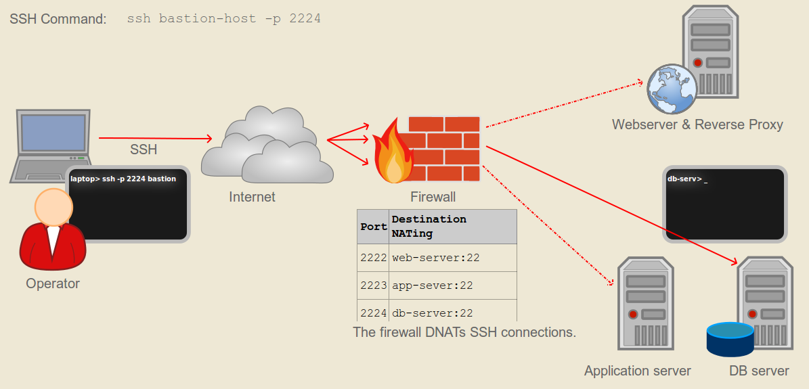

WORK IN PROGRESS
Solutions in detail
In the following sections the solution ideas from above are explained, and analysed. The discussed implementations are examples, and can be varied by a great deal.
An evaluation of each of the requirements stated is given, and summarized in the result
- fully fulfills the requirement,
- partially fulfills the requirement
- no or inadequate fulfillment of the requirement
Port DNAT
When using Port DNAT to access backend hosts, the backend hosts are partially exposed to the internet. The firewall will forward a port on its external interface to an ssh server running on a backend system. E.g. public-ip:2224 is forwarded to db-server:22, and public-ip:2223 is forwarded to app-server:22.

The operator points ssh to the public ip, e.g. ssh public-ip -p2222 to transparently ssh to db-server.
Example implementation
Setting up NAT is straight forward and requires a single firewall change per host. Users are only managed on the backend systems.
Adding a new backend host
If the firewall is a Linux host, then the following iptables rules for the firewall sever implement the port DNAT from public-ip:2224 to db-serv:22:
# run on the firewall
FIREWALL_EXTERNAL_IF=eth0
EXTERNAL_SRC_PORT=2224
BACKEND_SERVER=$(hostname db-serv)
iptables -t nat -I PREROUTING -i ${FIREWALL_EXTERNAL_IF} -p tcp --dport ${EXTERNAL_SRC_PORT} -m state --state NEW -j DNAT --to ${BACKEND_SERVER}:22
Connecting to the database server from the internet is done by sshing to the specific port:
# run on the operators system
ssh public-ip -p2224
Adding a new user
New users are only added to the backend systems.
Evaluation
| Requirement | requirement fulfilled | comment |
|---|---|---|
| REQ 1: Bastion Host | partially | The firewall reduces the attack surface of the backend systems to the ssh port. |
| REQ 2: Auditable | no | Only SSH encrypted traffic passes through the firewall, preventing an audit of the content. |
| REQ 3: Fine grained permissions | no | The firewall can only restrict communication to specific source/destination addresses. |
| REQ 4: Robustness | fully | Changes are limited to one system, making them very robust to carry out. |
| REQ 5: Four eyes principle for usermanagement | no | Anybody who can manage users on a backend system can do so alone. Anyone who can administer the firewall can add/remove hosts. |
| REQ 6: Port forwarding | ||
| REQ 7: scp |
Conclusion
Strengths
- Very simple to set up
- Works well for smaller systems and when the requirements are less strict
- All SSH sub-protocolls, and tools work without any changes (
sftp, port-forwarding,rsync, …)
Weaknesses
- Many requirements not fulfilled.
- All backend systems are directly exposed to the internet. This makes patching harder.
- Might get complex, when many backend systems are installed and/or they frequently change (Which port was server 4711 again?)
Final words
A simple solution for small scale systems with modest requirements regarding security.